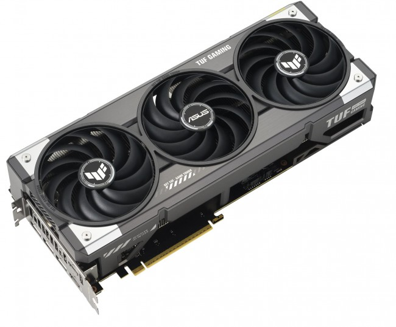

Karta graficzna – moc obrazu i detali
Karta graficzna (ang. GPU – Graphics Processing Unit) to komponent odpowiedzialny za generowanie obrazu wyświetlanego na monitorze. Jest kluczowa w grach komputerowych, pracy z grafiką, montażu wideo i wszędzie tam, gdzie potrzebna jest duża moc obliczeniowa do przetwarzania wizualnych danych. Karty graficzne dzielą się na zintegrowane (wbudowane w procesor) i dedykowane (osobne, mocniejsze układy montowane w slocie PCIe na płycie głównej). Dedykowane GPU posiadają własną pamięć VRAM, która odciąża RAM i pozwala na płynniejsze działanie w wymagających zadaniach. Producenci kart graficznych to m.in. NVIDIA i AMD, a na rynku spotkać można modele od różnych firm, takich jak MSI, ASUS czy Gigabyte. W nowoczesnych komputerach karta graficzna często odpowiada nie tylko za grafikę, ale też za wspomaganie pracy sztucznej inteligencji czy renderowanie 3D. .
